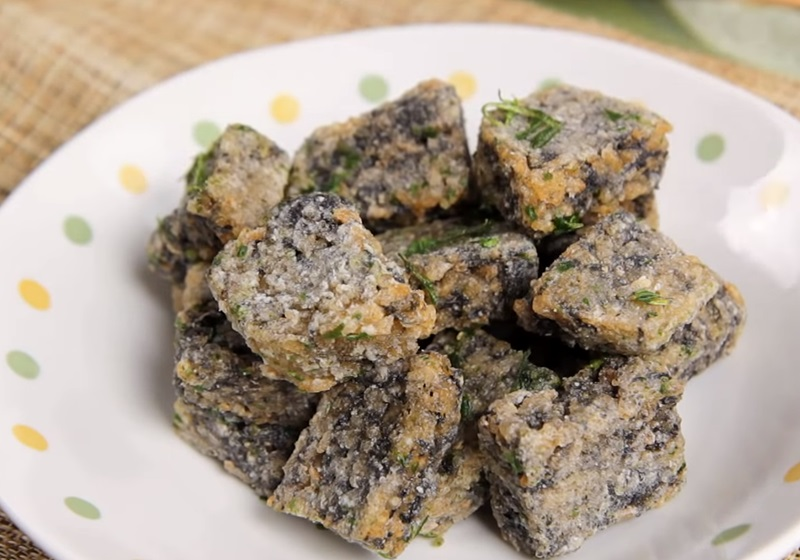

Fried Pork Blood Cake

Yowza! That name sure gets my saliva glands salivating fr!
I know you probably think this sounds nasty but its very yummy. It's actually porkblood and rice made into squares. Not a sweet dessert cake.
Crispy basil leaves and salty savory cake. Yummers
Ingredients:
- pork blood cake
- basil leaves
- cornstarch
- oil
- salt and pepper
- secret seasonings (idk what they are)
- MSG
Steps:
- Soak rice cakes overnight
- Move soaked rice cakes to a bowl and add cornstarch and secrete seasonings
- Steam the rice cakes for 40 minutes
- Dip rice cakes in a bit of cornstarch
- Heat oil and fry rice cakes 150-160 degrees celsius
- Fry basil til crispy
- Plop on a plate and enjoy!